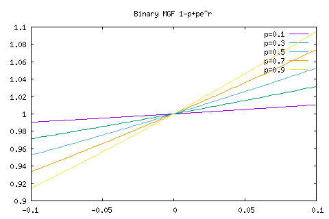
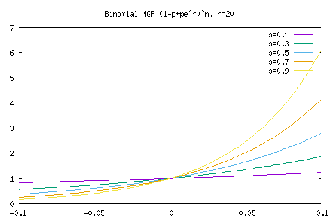

Probability
Table of Contents
1 Probability model core concepts
A probability model can split into three compoents:
- Sample space: a set whose elements are called sample points or outcomes
- Events: class of all subsets of the sample space
- Probability measure: can be treat as a relative "volume" of events in the sample space.
1.1 Sample space
A sample space is a set of all the possible outcomes or sample points, denoted as Ω. An outcome ω is often called a finest grain result when even {ω} contains no proper subsets. The outcomes in the sample space are mutually exclusive and collectively constitute the entire sample space.
1.2 Events
Given a sample space Ω, the class of subsets of Ω that constitute the set of events satisfies the followings:
- Ω is an event.
- For every sequence of events A1, A2, …, the union ∪n=1∞ An is an event
- For every event A, the complement Ac is an event
From 1. and 3., we can see ∅ is also an event since Ωc = ∅.
1.3 Probability
Given any sample space Ω and any class of events Ε, a probability rule is a function Pr{⋅} mapping each A ∈ Ε to a real number in such the following holds:
- Pr{Ω} = 1
- For every event A, Pr{A} ≥ 0
- The probability of the union of any sequence A1, A2,… of disjoint events is given by
Pr{∪n=1∞ An} = ∑n=1∞ Pr{An}
These can imply the followings:
- Pr{∅} = 0
- Pr{∪n=1m An} = ∑n=1m Pr{An} for A1,…,Am disjoint
- Pr{Ac} = 1 - Pr{A} for all A
- Pr{A} ≤ Pr{B} for all A ⊆ B
- Pr{A} ≤ 1 for all A
- ∑n Pr{An} ≤ 1 for A1,..,An disjoint
2 Probability theories
2.1 Conditional probabilities
For any two events A and B in a probability model, the conditional probability of A, conditional on B is defined if Pr{B} > 0 by
Pr{A|B} = Pr{AB}/Pr{B}
Bayes' law can be written in the form
Pr{A|B}Pr{B} = Pr{B|A}Pr{A}
which directly derived from the conditional definition.
2.2 Statistical independent
Two events, A and B, are statistically independent if
Pr{AB} = Pr{A}Pr{B}
For Pr{B} > 0, this is equivalent to Pr{AB} = Pr{A}.
2.2.1 conditionally independent
Given C if Pr{AB|C} = Pr{A|C}Pr{B|C}
2.2.2 Multiple event indepedence
The events A1,…,An, n > 2 are statistically independent if for each collection of S for two or more of the integers 1 to n.
\[ Pr\left\{\bigcap_{i\in S}A_{i }\right\} = \prod_{i\in S}Pr\left\{ A_i \right\} \]
Note S is a power set of A1,…,An excluding ∅ and individuals.
2.3 Random variables
A random variable rv is a function X from the sample space Ω to the set of real numbers ℜ. Three modifications are made.
- X might be undefined or infinite for a subset of Ω that has 0 probability.
- The mapping X(ω) must have the property that {ω ∈ Ω : X(ω) ≤ x} is an event.
- Every finite set of rv s X1,…,Xn has the property that for each x1 ∈ ℜ,…,xn ∈ ℜ, the set {ω:X1(ω) ≤ x1,…,Xn(ω) ≤ xn} is an event.
We need 2 and 3 else the cumulative distribution function may not exists.
A random variable can be thought as a way to pick events from Ω. Even if there are infinite events we just need the cumulative form {ω ∈ Ω : X(ω) ≤ x}, and the volume relative to Ω can be extracted by Pr{⋅} function.
2.4 Cumulative distribution function (CDF)
The cumulative distribution function of a rv X is a function FX(x) mapping each x ∈ ℜ into FX(x) = Pr{ω ∈ Ω : X(ω) ≤ x}. We often omit ω and write FX(x) = Pr{X ≤ x}.
\[ \lim_{x \to -\infty}F_X(x) = 0 \]
\[ \lim_{x \to \infty }F_X(x) = 1 \]
2.4.1 Probability mass function (PMF)
If X has only a finite or countable number value xi, the probability Pr{X = xi} of each sample xi is called the probability mass function, denoted by pX(xi).
2.4.2 Probability density function (PDF)
If the CDF FX(x) of a rv X has a finite derivative at x, the derivative is called the density, or more precisely the probability density function of X at x is denoted by fX(x); for δ > 0 sufficiently small, fX(x)δ then approximates the probability that X is mapped to a value between x and x + δ.
A rv is said to be continuous if there is a funciton fX(x) such that, for each x ∈ ℜ, the CDF satisfies
\[ F_X(x) = \int_{-\infty}^x f_X(y)dy \]
3 Common distributions
3.1 Binomial distribution
def binom(p,o): o[1] = n*p*(1-p)**(n-1) for k in range(2,n+1): o[k] = o[k-1] * (n+1-k) / k * p / (1-p) p1, p3, p5, p7, p9 = 0.1, 0.3, 0.5, 0.7, 0.9 o1 = [0.0]*(n+1) o3 = [0.0]*(n+1) o5 = [0.0]*(n+1) o7 = [0.0]*(n+1) o9 = [0.0]*(n+1) binom(p1,o1) binom(p3,o3) binom(p5,o5) binom(p7,o7) binom(p9,o9) return zip(o1,o3,o5,o7,o9)
p data u 1 w histeps tit "p=0.1", \ data u 2 w histeps tit "p=0.3", \ data u 3 w histeps tit "p=0.5", \ data u 4 w histeps tit "p=0.7", \ data u 5 w histeps tit "p=0.9"

3.2 Kullback-Liebler divergence
\[ D_{KL}(P||Q) = \sum_{i}P(i)log \frac{P(i)}{Q(i)} \]
from math import log def DKL(p,n,k): p_t = float(k)/float(n) return p_t*log(p_t/p) + (1-p_t)*log((1-p_t)/(1-p)) xrange = range(1,n) return zip(xrange, map(lambda k: DKL(0.1,n,k), xrange), map(lambda k: DKL(0.3,n,k), xrange), map(lambda k: DKL(0.5,n,k), xrange), map(lambda k: DKL(0.7,n,k), xrange), map(lambda k: DKL(0.9,n,k), xrange) )
p data u 1:2 w histeps tit "p=0.1", \ data u 1:3 w histeps tit "p=0.3", \ data u 1:4 w histeps tit "p=0.5", \ data u 1:5 w histeps tit "p=0.7", \ data u 1:6 w histeps tit "p=0.9"
3.3 Moment generating function
\[ M(t) = g_X(t) = E\left[e^{tX}\right] = \int_{-\infty}^\infty e^{tX}dF_X(x) \]
The kth derivative of gX(0) is the kth moment of X: E[Xk].
The logrithm of the MGF, called cumulant gnerating function is also useful.
\[ R(t) = \log\left[M(t)\right] \]
\[ R'(t) = \frac{M'(t)}{M(t)} \]
\[ R''(t) = \frac{M(t)M''(t) - [M'(t)]^2}{[M(t)]^2} \]
And since M(0) = 1
\[ \mu = M'(0) = R'(0) \]
and
\[ \sigma^2 = M''(0) - [M'(0)]^2 = R''(0) \]
3.3.1 Binary MGF
set title "Binary MGF 1-p+pe^r" p [-0.1:0.1] f(x)=(1-p+p*exp(x)), \ p=0.1, f(x) tit "p=0.1", \ p=0.3, f(x) tit "p=0.3", \ p=0.5, f(x) tit "p=0.5", \ p=0.7, f(x) tit "p=0.7", \ p=0.9, f(x) tit "p=0.9"

3.3.2 Binomial MGF
set title "Binomial MGF (1-p+pe^r)^n, n=20" p [-0.1:0.1] f(x)=(1-p+p*exp(x))**20, \ p=0.1, f(x) tit "p=0.1", \ p=0.3, f(x) tit "p=0.3", \ p=0.5, f(x) tit "p=0.5", \ p=0.7, f(x) tit "p=0.7", \ p=0.9, f(x) tit "p=0.9"

3.4 Chernoff bound
\[ Pr\{S_n \ge na\} \le \left[g_X(r)\right]^n e^{-rna} \]
set title "Binomial MGF (1-p+pe^r)^n * exp(-x*na), n=20" p [-0.3:1.1] f(x)=((1-p+p*exp(x))**20)*exp(-x*a), \ p=0.5, a=10, f(x) tit "p=0.5, na=10", \ p=0.5, a=13, f(x) tit "p=0.5, na=13", \ p=0.5, a=15, f(x) tit "p=0.5, na=15"
The smallest value of na=10 is close to 1, while smallest value of na=15 is close to zero. These are the bounds for n=20, Pr{Sn ≥ na}.